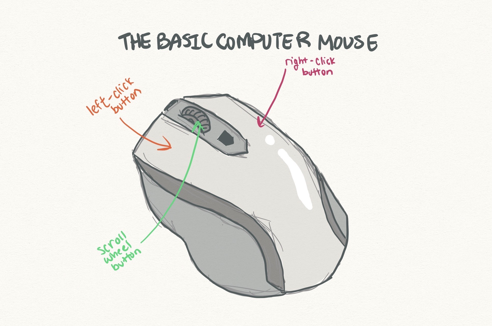
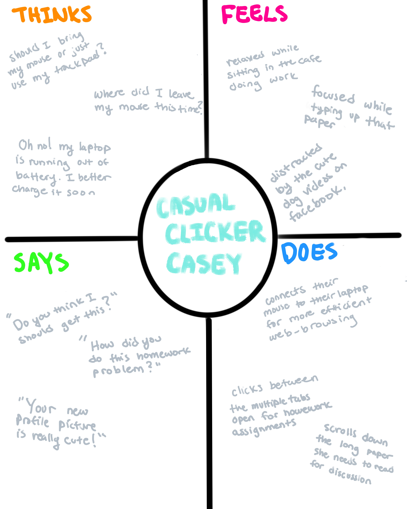
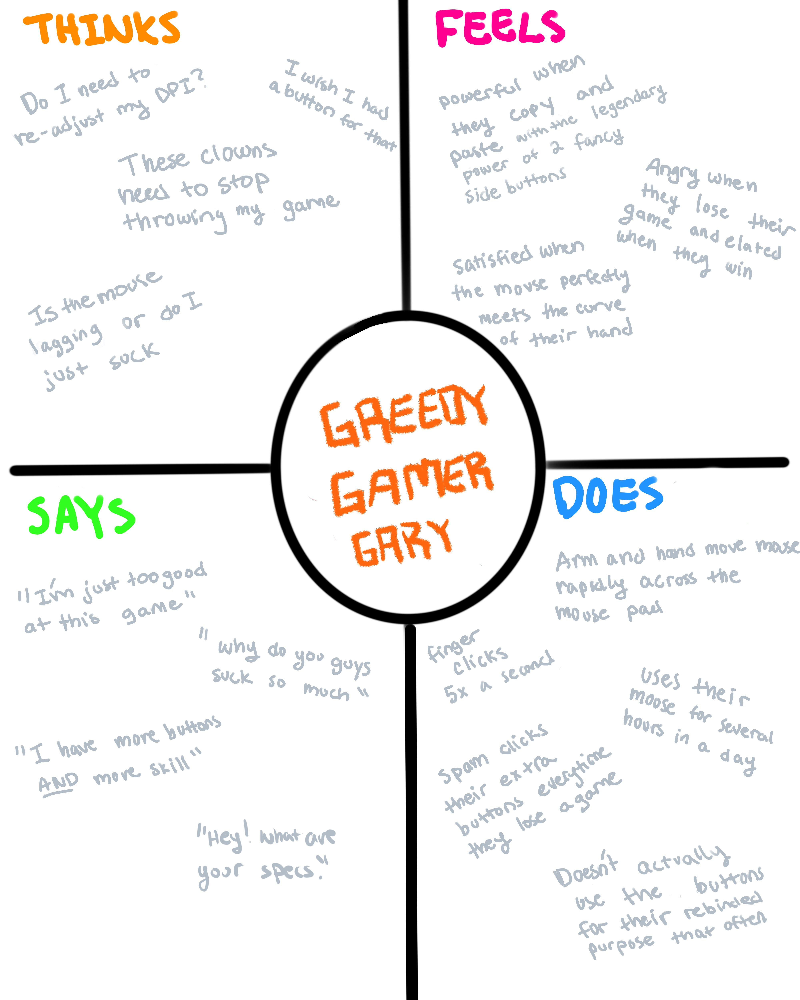
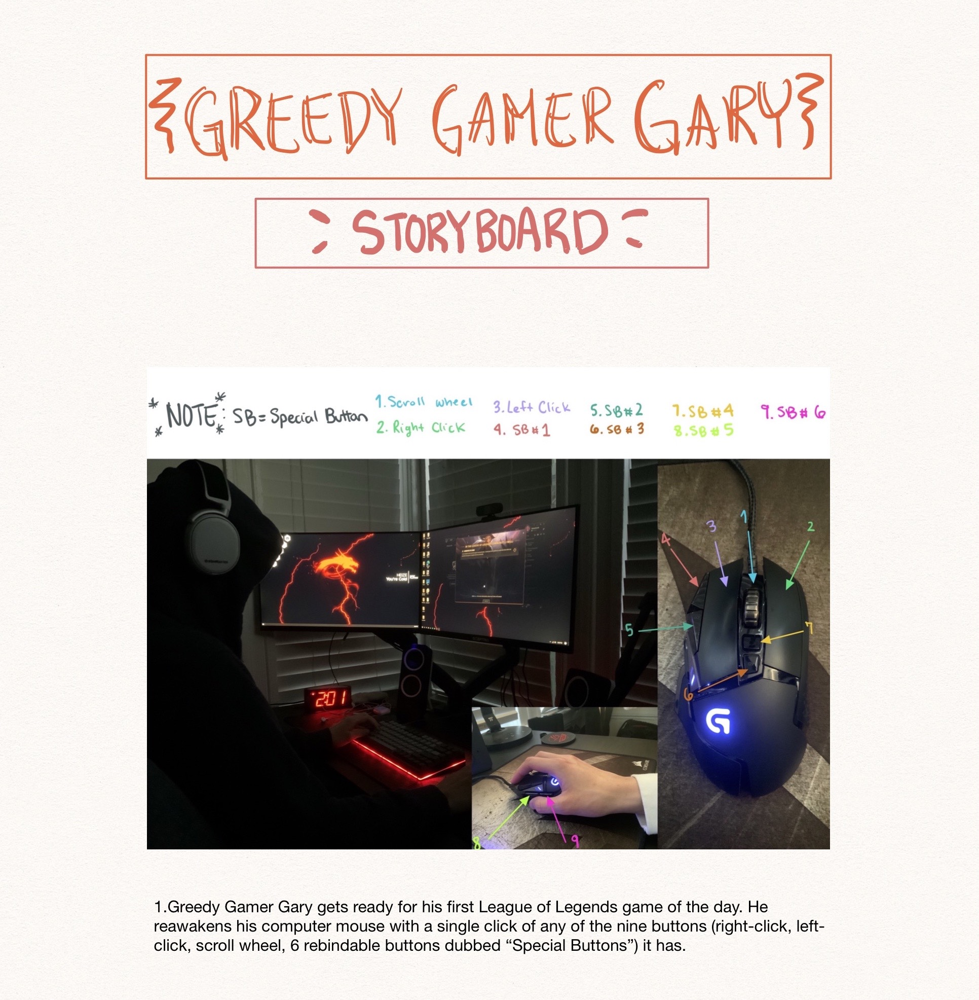
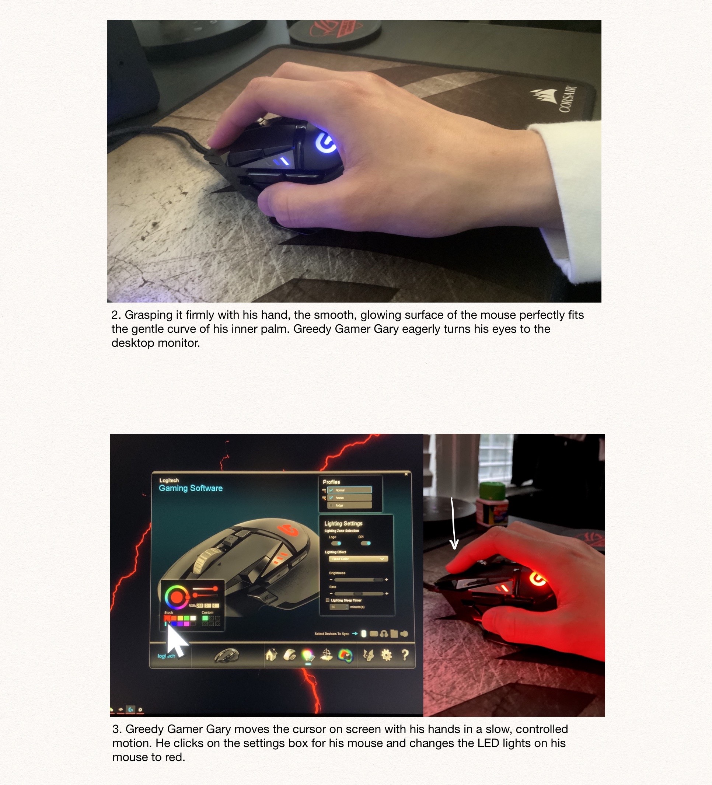
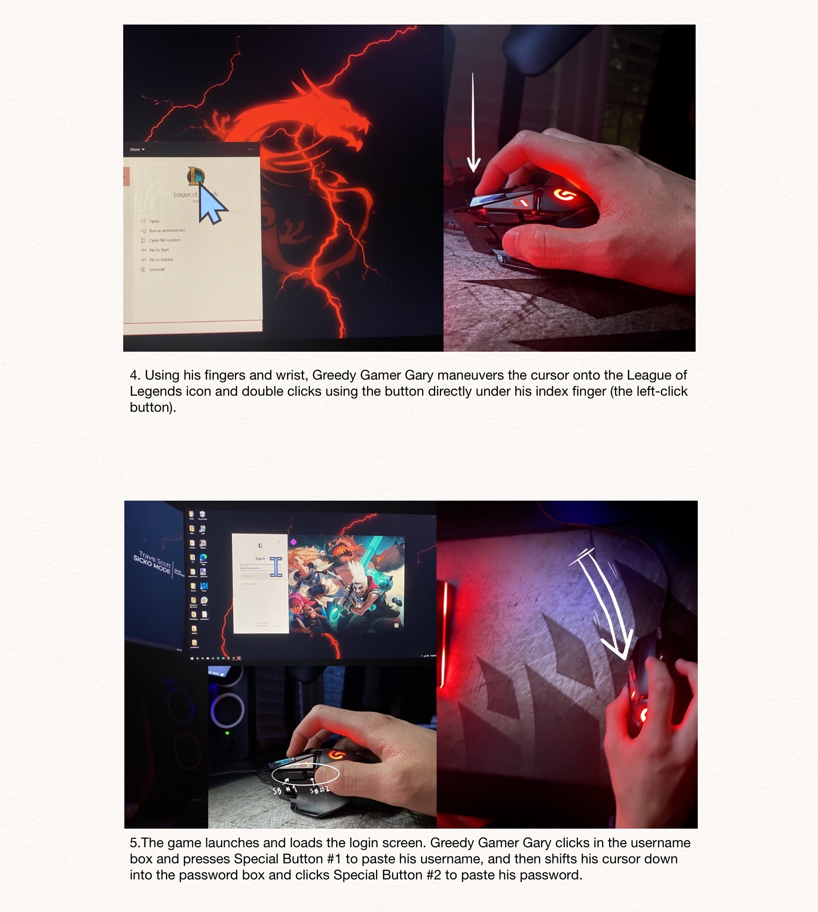
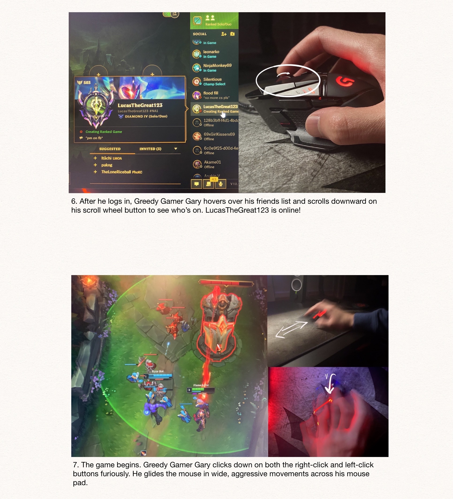
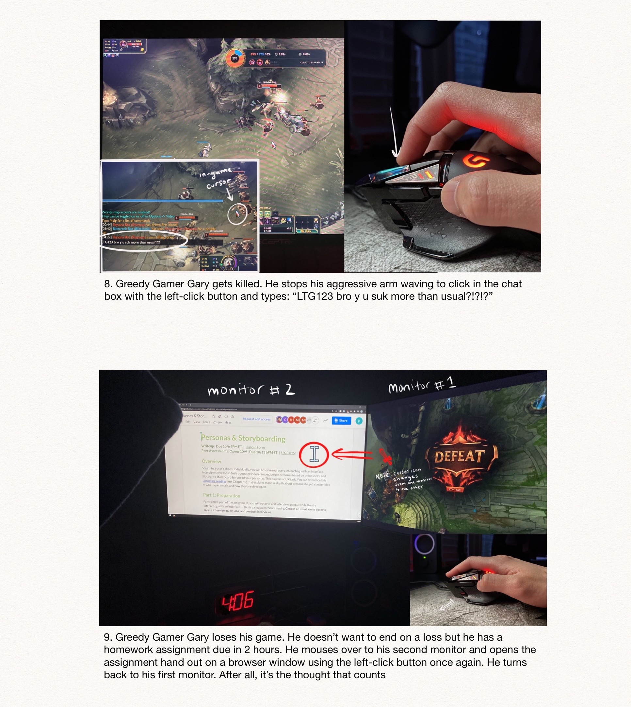
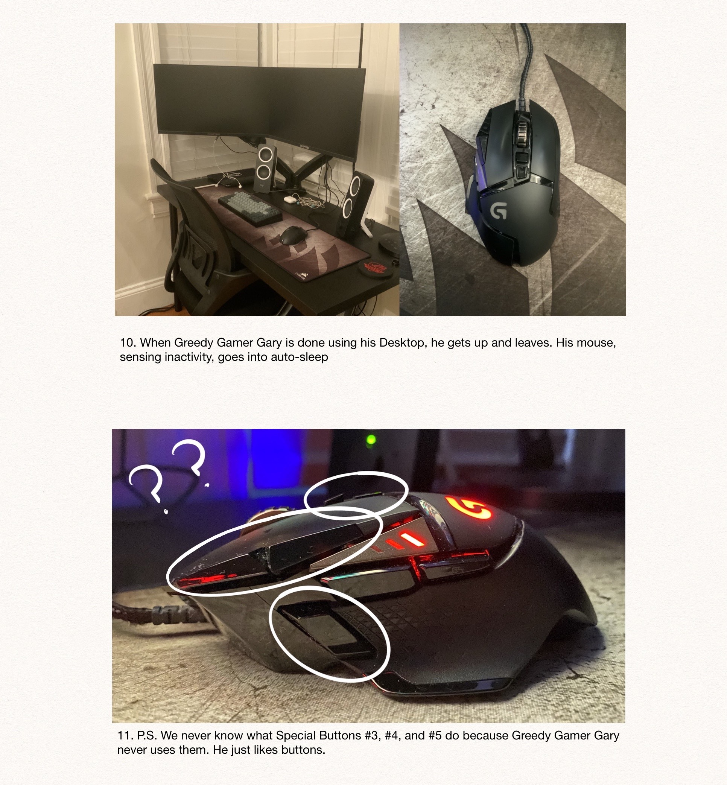

THE MOUSE 🐀
Does everyone use the mouse the same way?
what even IS the MOUSE? 🐭

The computer mouse is an instrument that enables users
to interact with the elements on their computer screen 🖥.
Without it, the user would not be able to maximize the full
capabilities of a computer.
Potential substitutes of the computer
mouse, such as a trackpad or a touch screen,
are arguably less
efficient compared to a computer mouse and don’t possess as much
functionality.
To find out more, I interviewed some people...
THE INTERVIEWS
THE QUESTIONS ASKED:
- Out of all the computer mice you have ever had, which one is the
one you liked the most? 🤔
- Was there ever a time when your computer mouse elicited a
particularly strong emotion from you? 😡😫😍🥴
- What are certain features you expect out of your computer mouse?👀
- If you could change anything about your computer mouse,
what would you change?👉👈
Interviewee 1 🧑🏼🦱
Observations
- Scrolls down the screen with the scroll button
- Moves and clicks between tabs and apps with the mouse
- Uses the side buttons to copy and paste
- Shows no sign of struggling with the interface at any moment
- Uses the mouse with a desktop computer
Answers
-
The mouse he has now is his favorite because it has two convenient,
rebindable buttons
that he has binded to copy and paste.
-
He has never had a moment when his mouse failed to meet his expectations, which
may
be an indication that his mouse already serves him faultlessly
-
He doesn't care what his mouse does as long as it has side buttons.
-
If he had to change one thing, he wouldn't mind having more side buttons.
Interviewee 2 👨🏻🦲
Observations
- Uses scroll button up and down and side to side for side scrolling
- Moves and clicks between tabs and apps with the mouse
- Copy and pasted with the keyboard (not the mouse)
- While playing a game, moves mouse with fast and
wide movements
and clicks very rapidly
- Uses the mouse with a desktop computer
Answers
-
His current mouse is the one he likes the most. It has 6 rebindable buttons
in addition to the basic 3. The grip fits his hand really well
-
one of his old mice used to really infuriate him because the cursor didn't
track his movements accurately so it didn't feel intuitive using it
-
His current mouse has many extra features. For example, the scroll button can be
tilted left to right for side scrolling
-
He wishes his mouse could be convertible between wired and unwired
Interviewee 3 👩🏻
Observations
- She plugs the mouse into her laptop to use it and stows it away
when she's done
- Moves and clicks between tabs and apps with the mouse
- Uses the mouse to click between tabs. However after she types something out,
she switches to using the trackpad. When she’s done typing, she switches back
to the mouse
- Shifts the wire of the computer mouse from time to time to get it out of her way
Answers
-
Her current mouse is her favorite because it's wired; it doesn't need charging and she has
a history of losing USB recievers
-
For her previous mice, she became increasingly more frustrated everytime she lost the USB reciever
for her unwired mice (5x). She used to buy the cheapest USB receiver mouse at Target before finally
switching to her current wired one.
-
She likes how simple her mouse is; she owns THE basic mouse.
-
Would like a bluetooth mouse because it means no wire AND nothing to lose.
Great! Now that we're done with interviews, let's draw up some personas 🖍
THE PERSONAS
Persona #1: Casual Clicker Casey ☕️💻
Casual Clicker Casey is the kind of person who only uses her mouse for convenience,
and doesn't use it when it becomes inconvenient. Sometimes the trackpad on her laptop
gets too annoying to deal with so she pulls out her trusty bluetooth mouse to get things
going a little faster. When it comes to a computer mouse, the simpler the better.
Casual Clicker Casey represents the practical mouse users who just want a mouse for their
portable laptop.

Persona #2: Greedy Gamer Gary 🤑🎮
Greedy Gamer Gary represents the kind of users who are looking for a high-tech
mouse to go with their high-tech computer set up. These users don't intend to use
their mice with a laptop; they use their mice with a desktop monitor run by
their powerful computers. The extra buttons help them maximize efficiency
and the accurate, lag-free, specs of their mice are especially curated for their gaming needs.

Hm. Greedy Gamer Gary looks like an interesting persona to work with.
Let's draw up a storyboard for him! 📝
THE STORYBOARD






Andddddd that's it! Hope you enjoyed and have a nice day ☺️